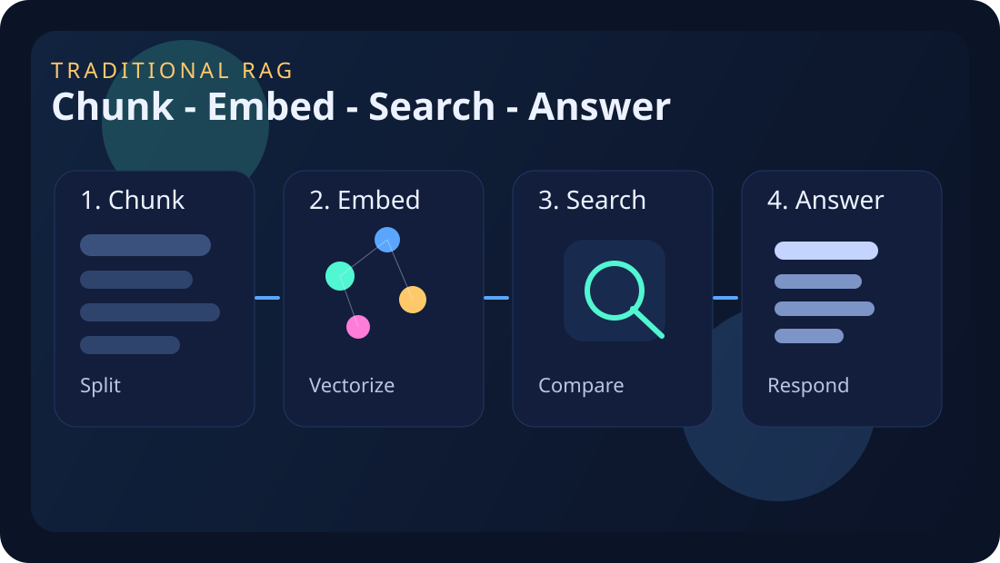
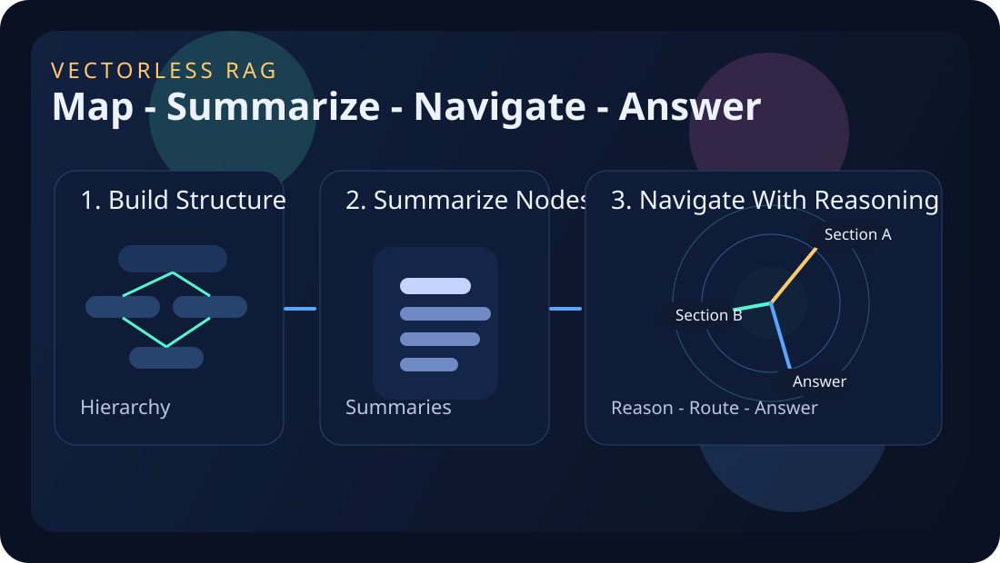

No embeddings. No vector database. Retrieval starts from structure.
The system follows a hierarchy instead of jumping to the nearest chunks.
It fits reports, manuals, contracts, and other long structured documents well.
Most RAG systems today follow the same basic pattern. They split a document into chunks, create embeddings for those chunks, store them in a vector database, and retrieve the nearest matches when a user asks a question. This works very well in many real systems.
But long documents are not just piles of similar sentences. They have sections, headings, nested ideas, and a flow. In policy files, contracts, financial reports, or technical manuals, the structure itself carries meaning. That is where vectorless RAG becomes interesting.
Traditional RAG
Break the document, search for similar chunks, then answer.
This is the familiar route: embeddings, vector search, and the most similar text pieces coming back first.
The flow is usually: split the document, embed every chunk, compare the question against those vectors, pull the closest matches, and give that context to the model.

Chunk: Split the document into small retrievable pieces.
Embed: Convert each chunk into a vector representation.
Search: Compare the question against those vectors.
Answer: Send the best matching chunks to the model.
What “vectorless RAG” actually means
In the PageIndex framing, vectorless RAG means retrieval without embeddings, without a vector database, and without arbitrary chunking. Instead of building a similarity engine, the system first builds a document map. You can think of it like a smart table of contents with summaries at different levels.
Traditional RAG retrieves by similarity. PageIndex retrieves by reasoning over structure.
Mental Model
Think less “nearest chunk,” more “best branch of the document.”
The real change is not only technical. It is conceptual. The system starts behaving more like a careful reader using section summaries and document structure to decide where to go next.
The flow becomes: map the document, summarize each section, reason over that structure, follow the best branch, and then answer from the most relevant part.

Hierarchy: Build a map of sections and sub-sections.
Summaries: Create short summaries for each node.
Navigate: Use reasoning to follow the best branch.
Answer: Pull the right section and generate the response.
That sounds like a small difference, but it changes the whole retrieval process. In classic RAG, the system asks: “Which chunks are closest to this question?” In structure-first retrieval, it asks: “Which part of this document is the best place to search first?”
Why this is becoming interesting now
I think the timing matters. Models are much better now at following structured instructions, reading summaries, and navigating layered context. That makes hierarchy-based retrieval more practical today than it would have felt earlier.
The PageIndex repository describes the system as a vectorless, reasoning-based RAG framework, and its main message is simple: similarity is not always the same as relevance. For long, structured content, a navigational map plus reasoning may sometimes work better than chunk similarity alone.
How the PageIndex idea works
From the public repository and explainer article, the workflow looks like this:
- The document is turned into a hierarchical index, closer to a table of contents than a chunk list.
- Each node gets a summary that describes that section.
- At query time, the model reasons over the structure to choose the best branch.
- Only the relevant section text is pulled in for the final answer step.
This feels closer to how a person reads a long report. We do not treat every paragraph equally. We first use headings, structure, and summaries to decide where the useful part probably is.
Where this could outperform classic RAG
I would be most excited about this approach in domains where structure is part of the meaning: regulatory filings, contracts, policies, textbooks, and operational manuals. In these settings, headings matter, section order matters, and page-level context matters.
Structure-first retrieval also gives something valuable: explainability. If a system can say “I moved from this node to this section and then used these pages,” its retrieval path is easier to inspect than a black-box similarity result.
Why I don’t think this replaces all vector search
Even if vectorless RAG is one of the freshest ideas in retrieval right now, I do not see it as a total replacement for embeddings. I see it as a challenge to the idea that embeddings must always be the default starting point.
For messy data, cross-document search, short knowledge bases, or places where structure is weak, vector search can still be very effective. The most interesting future may be hybrid: systems that know when to navigate structure, when to use similarity search, and when to combine both.
Classic RAG
Similarity First
Embeddings, chunk search, vector database retrieval, then answer generation.
Vectorless RAG
Structure First
Hierarchical index, guided navigation, section selection, then answer composition.
My takeaway
The reason this trend matters is not only that it avoids a vector database. It matters because it changes the retrieval mindset. Instead of asking how to search harder, it asks how to navigate smarter.
That makes vectorless RAG feel like more than a niche optimization. It feels like a reminder that better retrieval may come not only from better math, but from better representations of how documents are actually organized.
Quick comparison: traditional RAG vs vectorless RAG
- Traditional RAG asks: which chunk is most similar to the question?
- Vectorless RAG asks: which part of the document should I inspect first?
- Traditional RAG is strong for broad semantic search.
- Vectorless RAG is especially interesting for long structured documents.
Quick Quiz
Check your understanding
1. Fill the blank
Vectorless RAG starts from document _____.
2. MCQ
Traditional RAG often depends on:
3. Match the approach
4. Code-style fill
PageIndex retrieves by _____ over structure.
5. Best fit
Vectorless RAG is especially promising for:
6. Final idea check
What future does this article suggest?
Quiz Complete
You scored 0/6
Nice work. Here are the correct answers for a quick revision.
- Q1: structure
- Q2: A vector database
- Q3: Traditional RAG = similarity search, Vectorless RAG = hierarchy navigation
- Q4: reasoning
- Q5: Long structured documents
- Q6: A hybrid future is likely
References
These two public sources shaped the article’s explanation of PageIndex and vectorless RAG.